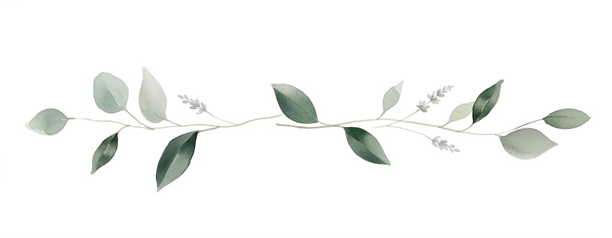

Con gran alegría,
y junto a nuestras familias,
Josselyn
y
Jordán
te invitamos a acompañarnos
en la celebración de nuestro matrimonio

Con gran alegría,
y junto a nuestras familias,
y
te invitamos a acompañarnos
en la celebración de nuestro matrimonio
Sábado 03 de Octubre
2026
a las 18:00 hrs
Casona Fundo el Rosario, María Pinto, Región Metropolitana
Luego compartiremos una noche de cena, baile y sorpresas
hasta las 02:00 hrs.
Todo comenzó con una hermosa amistad, sin imaginar lo que el destino nos tenía preparado. Un día comprendimos al instante que esto era lo que siempre habíamos estado buscando y soñando. Hoy, estamos listos para pasar el resto de nuestras vidas juntos.

Bienvenida

Ceremonia

Cóctel

Cena

Fiesta y Bar
Antes del 30 de junio

Sugerimos vestimenta para Cóctel (semiformal de tarde-noche). Además gran parte del evento será sobre césped, por lo que recomendamos evitar tacos delgados.
Para esta ocasión, hemos decidido que sea un evento exclusivo para adultos. Agradecemos su comprensión.
Sí, hay estacionamiento privado y seguro para nuestros invitados.
El día en María Pinto suele ser cálido (21°C aprox.), sin embargo la temperatura baja considerablemente al atardecer. Dado que toda nuestra celebración será al aire libre, sugerimos traer un abrigo o chaqueta.
Dirección:
Fundo El Rosario, María Pinto,
Región Metropolitana.
Tips de ruta:
Desde Santiago toma Costanera Norte, luego Ruta 68 en dirección a la costa. Pasando el Túnel Lo Prado, toma la salida hacia María Pinto. Al llegar al disco Pare de la salida, dobla a la izquierda (¡atentos ahí para no pasarse!). Luego de eso, solo sigue las indicaciones del GPS, que el camino es sencillo.
El mejor regalo es tu compañía. Sin embargo, si deseas tener un detalle con nosotros, puedes visitar nuestra lista de novios.
Ver Lista de NoviosCon amor, Josselyn y Jordán
¡Los esperamos! 🤍